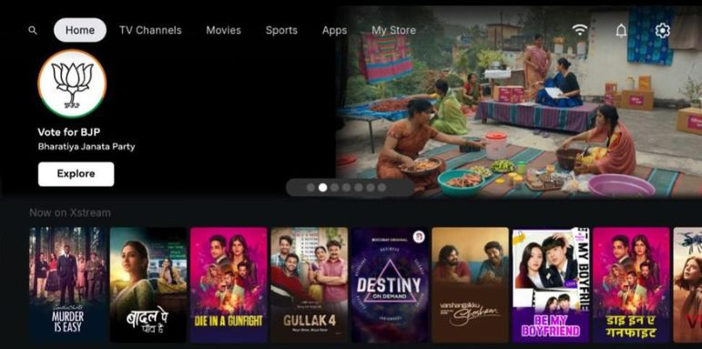

Call anytime
+91-99717771018

BAW provides end-to-end advertising and communication solutions tailored for government bodies, public sector organizations, central ministries, state departments, and civic initiatives across India. Our campaigns are designed to help public messages reach the right audience with relevance, trust, and visibility.
With a deep understanding of public communication, awareness-building, and platform-led media execution, we help campaigns move beyond conventional messaging to create stronger citizen engagement and campaign impact.
Our government campaign solutions are built to support awareness, participation, public trust, and communication outcomes across a wide range of sectors and campaign objectives.
Government campaigns need more than visibility — they need clarity, reach, trust, and public relevance.
Our work spans campaigns for state DIPR, central ministries, public sector undertakings, BFSI, civic outreach, and institutional visibility initiatives where communication needs to be both impactful and audience-aware.
We work with departments, institutions, tourism bodies, and public sector ecosystems to deliver platform-led campaigns with relevance, reach, and visibility.
We support public awareness campaigns, election and voter outreach, policy and scheme promotion, state department communication, PSU campaigns, BFSI campaigns, and civic outreach initiatives.
Yes, our work is designed to support state departments, central ministries, public sector bodies, tourism boards, and institutional communication campaigns.
We use platform-led campaign execution and audience-focused media placements to help campaigns connect with the right people more effectively.
Yes, in addition to digital placements, we also support on-ground communication formats, including flyer and local outreach activities where relevant.